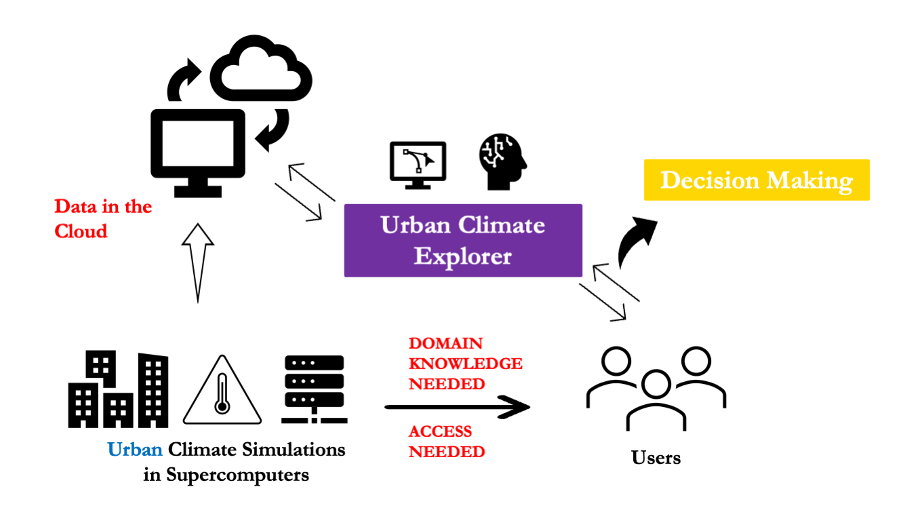
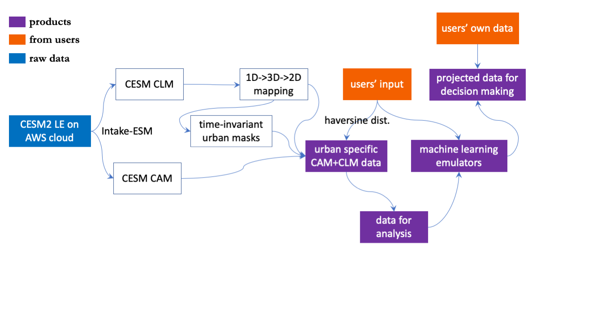

About
Introduction
This platform enables free and easy access to the urban climate simulations provided by National Center for Atmospheric Research and Amazon Web Services (AWS) via Cloud Computing. By providing the necessary information as the input (e.g., time, latitude, longitude, climate scenarios, etc.), users can explore and utilize urban climate data. Specifically, users can:
visualize/analyze urban climate of a particular city/cities under different climate change scenarios and different version model simulations (e.g., urban heat waves analysis)
train fast machine learning emulators of the urban climate (e.g., mapping from radiation to urban temperature) using a Automated Machine Learning tool (FLAML)
apply the machine learning emulators to users’ own data to create customized urban climate projections for their own needs
Relevant Publications
Zheng, Z., Zhao, L. & Oleson, K.W. Large model structural uncertainty in global projections of urban heat waves. Nat Commun 12, 3736 (2021). https://doi.org/10.1038/s41467-021-24113-9
Zhao, L., Oleson, K., Bou-Zeid, E. et al. Global multi-model projections of local urban climates. Nat. Clim. Chang. 11, 152–157 (2021). https://doi.org/10.1038/s41558-020-00958-8
Concept

Technical Workflow
